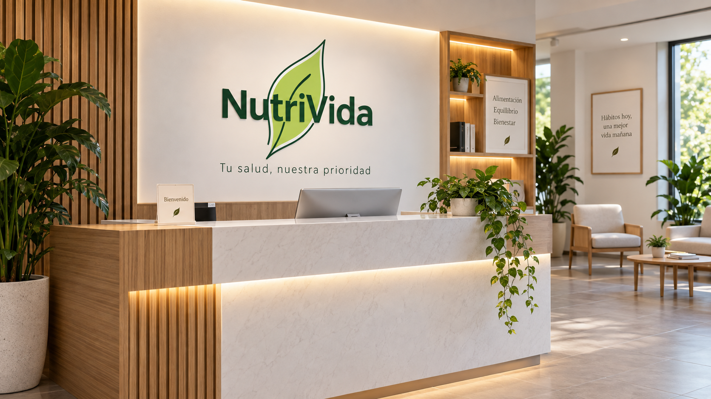
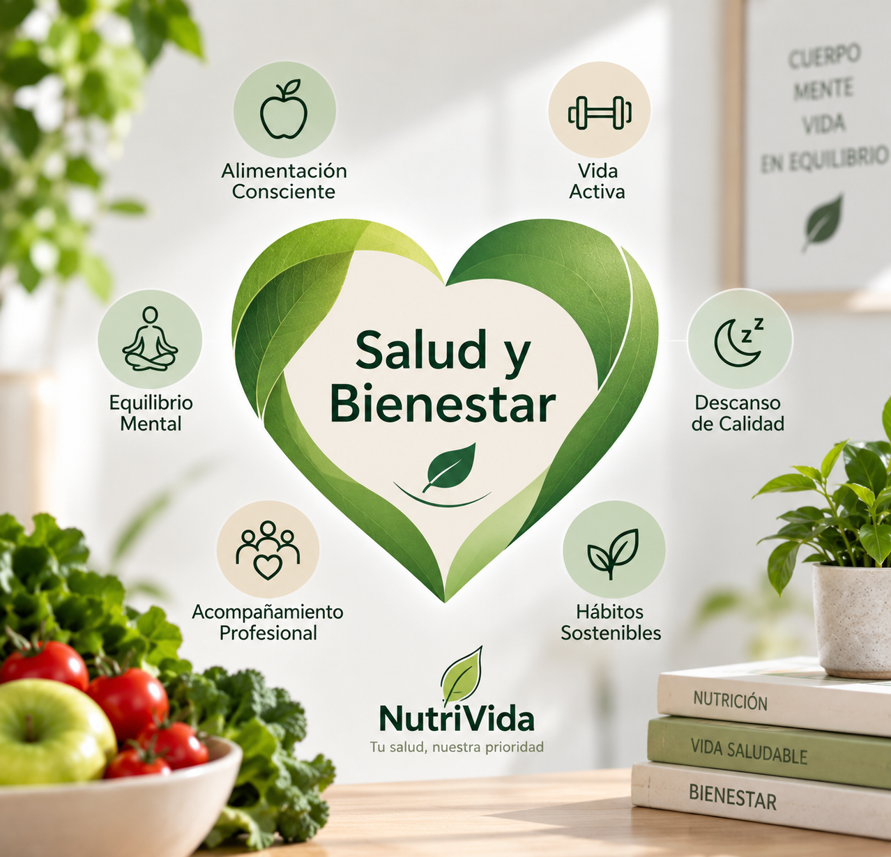

✓
Nuestra Misión
Promover hábitos saludables mediante orientación nutricional personalizada y educación alimentaria.
CLÍNICA DE NUTRICIÓN
En NutriVida te acompañamos a mejorar tu alimentación mediante una atención personalizada según tus necesidades y objetivos.

CONÓCENOS

NutriVida es una clínica nutricional fundada en 2016 en Temuco, Región de La Araucanía.
Contamos con cuatro nutricionistas que trabajan en control de peso, enfermedades metabólicas, nutrición deportiva y alimentación vegetariana y vegana.
Nuestro objetivo es entregar orientación, educación alimentaria y seguimiento para acompañar al paciente durante su proceso.
Una atención basada en cercanía, profesionalismo y acompañamiento.
Promover hábitos saludables mediante orientación nutricional personalizada y educación alimentaria.
Ser reconocidos por la calidad de nuestra atención y el compromiso con cada paciente.
Empatía, respeto, responsabilidad, profesionalismo y confidencialidad.
ÁREAS DE ATENCIÓN
Diferentes áreas para distintas necesidades nutricionales.
Planificación y seguimiento para mejorar hábitos y trabajar objetivos relacionados con el peso.
Orientación alimentaria para personas que requieren apoyo relacionado con factores metabólicos.
Alimentación adaptada a actividad física, rendimiento y recuperación.
Orientación para organizar una alimentación equilibrada basada en plantas.
ACOMPAÑAMIENTO
Durante la consulta se revisan hábitos, objetivos y antecedentes para entregar orientación adaptada a cada paciente.
Los controles posteriores permiten observar avances y realizar ajustes cuando sea necesario.
Ver planesEQUIPO NUTRIVIDA
Conoce las principales áreas de nuestro equipo de nutricionistas.

Evaluación nutricional, hábitos y control de peso.

Orientación nutricional asociada a salud clínica y metabólica.

Alimentación para rendimiento, actividad física y recuperación.

Orientación en alimentación vegetariana, vegana y plant-based.
BIENESTAR
Alimentación, hidratación, actividad física y descanso forman parte de un estilo de vida saludable.
Nuestro objetivo es orientar cambios realistas que puedan mantenerse en el tiempo.

EDUCACIÓN NUTRICIONAL
Conocer los alimentos también ayuda a tomar mejores decisiones en la vida cotidiana.
CONTACTO
Escríbenos para conocer más sobre nuestros servicios y tipos de atención.
Temuco, Región de La Araucanía
Visítanos en nuestras instalaciones o contáctanos por nuestros canales oficiales de atención.
Av. Alemania 01234, Edificio Médico, Temuco, Chile
+56 9 8765 4321
contacto@nutrivida.cl
Lunes a Viernes: 08:30 - 19:00 hrs
Sábados: 09:00 - 14:00 hrs